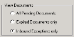
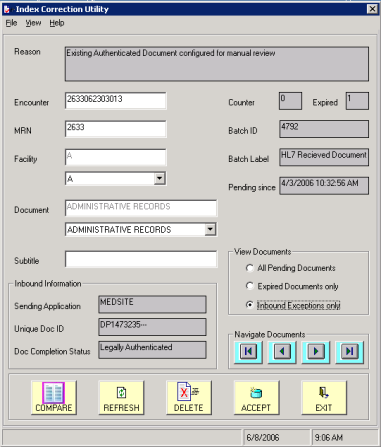
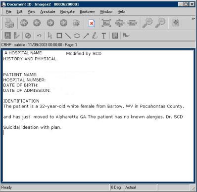

This task allows you to compare an inbound document with an existing document that has the same index information. Your profile must have permission to manually review inbound exceptions.



Note: If you are viewing a pre-released document that has no existing released document, the system displays a notification message. Click OK to close the message box.
|
If |
Then |
|---|---|
|
You want to keep the inbound document |
Click Accept. The system prompts for confirmation. Click Yes to confirm the action or No to cancel the action. If you click Yes, the system follows the processing logic specified for this document exception: Replace, version, insert, or append. Where applicable, the system also automatically creates signature deficiencies. |
|
You want to discard the inbound document |
Click the Delete button. The system prompts for confirmation. Click Yes to confirm the action or No to cancel the action. See Deleting documents for more information. |